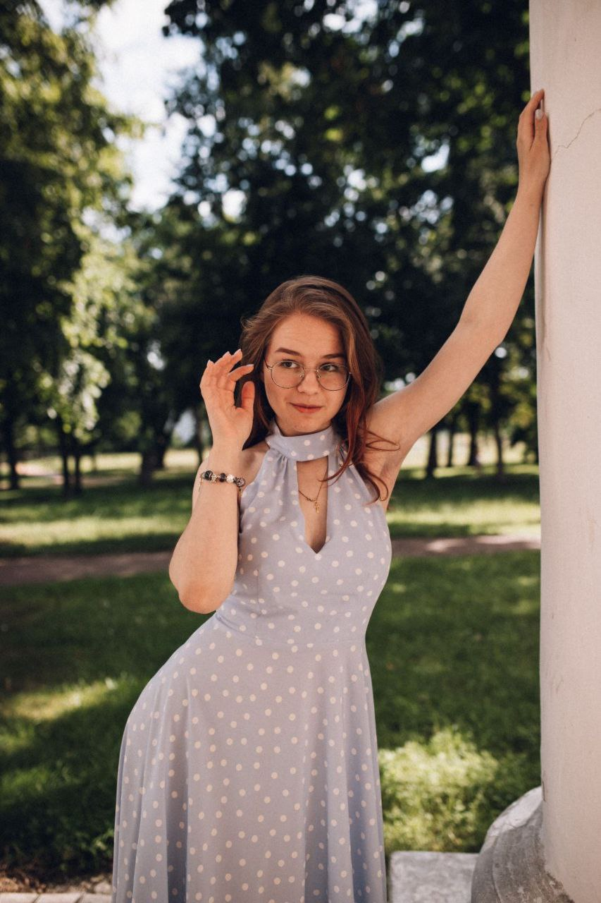

Привіт! Мене звати Поліна, мені 19 років. Я студентка 2-го курсу факультету ФБМІ Київського політехнічного інституту імені Ігоря Сікорського, спеціальність – Комп'ютерні науки. Мене завжди цікавила комбінація медицини, ортопедії та технологій.